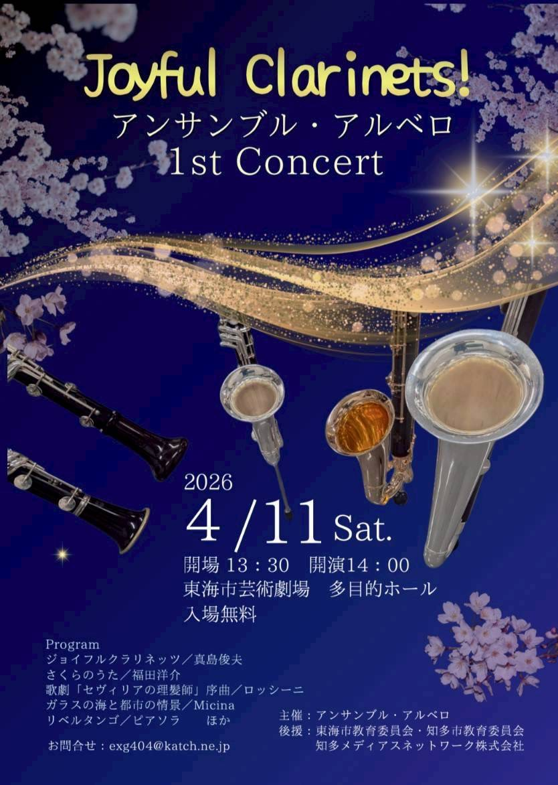
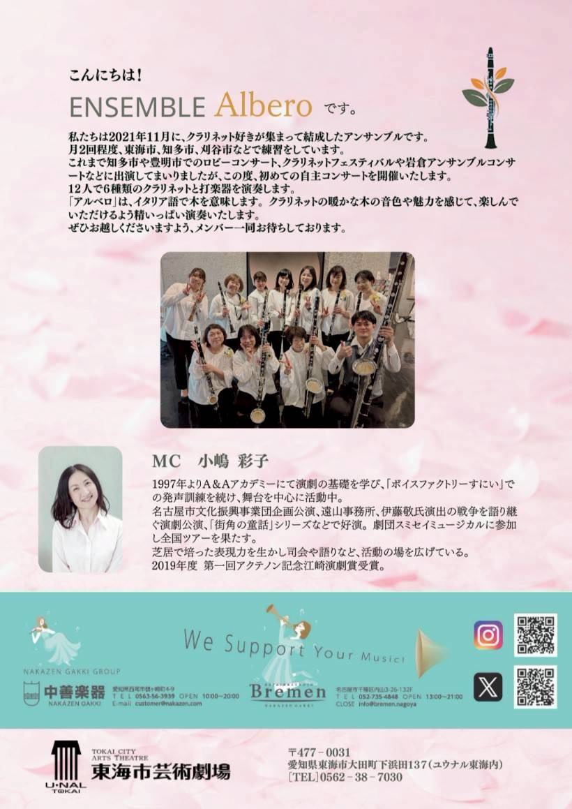
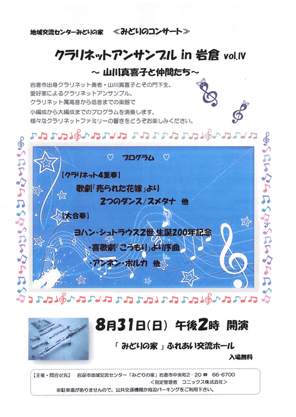
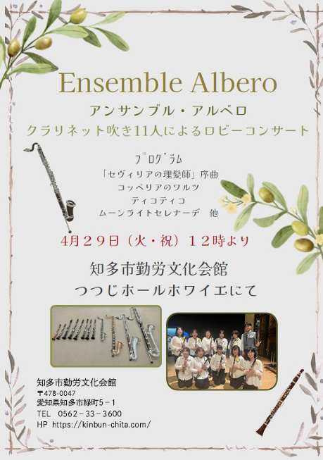
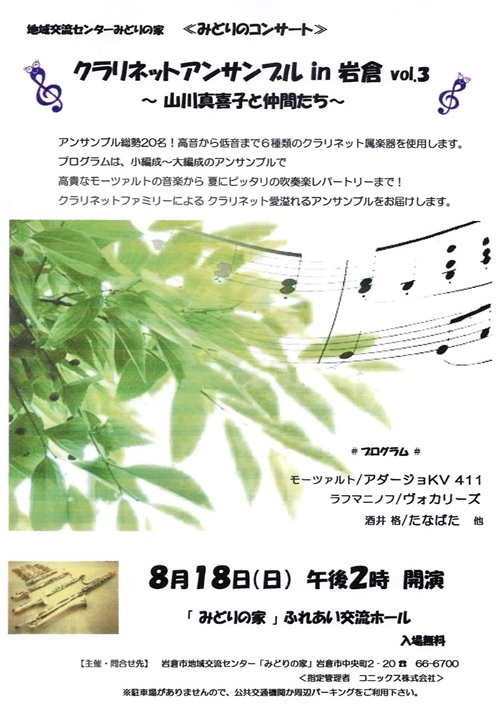
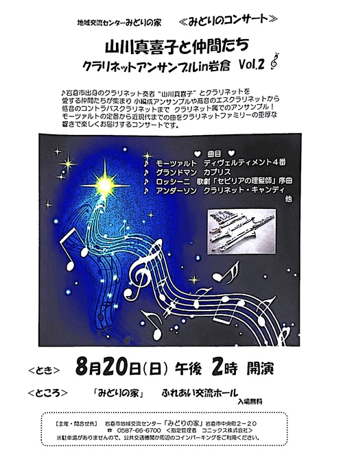

これまでの演奏活動


Joyful
Clarinets!
Ensemble Albero 1st Concert
| 日時 | 2026年4月11日(土) 開場 13:30 / 開演 14:00 |
|---|---|
| 会場 | 東海市芸術劇場 多目的ホール アクセス：名鉄太田川駅西口より徒歩約5分 |
| 入場料 | 無料（全席自由） |
| 曲目 | ジョイフルクラリネッツ／真島俊夫 さくらのうた／福田洋介 歌劇「セヴィリアの理髪師」序曲／ロッシーニ ガラスの海と都市の情景／Micina リベルタンゴ／ピアソラ 他 |
No Image...
クラリネット協会・名古屋主催
アンサンブルコンテスト
2025年12月14日(日)
曲目
ガラスの海と都市の情景／Micina
けやきアーティストステージVol.5
木の調和～さまざまなクラリネットの響き～
2025年9月24日(水)
大ホールのホワイエで、ロビーコンサートを行いました。
曲目
マンタ・スクランブル～石垣の海は碧く～／金山徹
Tico-Tico／ゼキーニャ・アブレウ
ふるさと日本の四季／中田喜直
小さい秋見つけた～雪の降る街を～さくら横ちょう～夏の思い出
川の流れのように／美空ひばり 他

クラリネットアンサンブルin岩倉 Vol.4
～山川真喜子と仲間たち～
2025年8月31日(日)
岩倉市出身のクラリネット奏者“山川真喜子”とクラリネットを愛する仲間たちによる、さまざまなクラリネットでのアンサンブルをお楽しみください。
曲目
ガラスの海と都市の情景／Micina
喜歌劇「こうもり」序曲／ヨハン・シュトラウス2世
アンネン・ポルカ／ヨハン・シュトラウス2世
クラッペンシュレック／ルドルフ・イエッテル
マーチ「フォトルバ」／クルト・シュミット 他

知多市勤労文化会館 ロビーコンサート
2025年4月29日(火・祝)
練習会場としてお世話になっている知多市勤労文化会館で、ロビーコンサートを行いました。
曲目
セヴィリアの理髪師／ロッシーニ
コッペリアのワルツ／Delibes
Tico-Tico／ゼキーニャ・アブレウ
マンタ・スクランブル～石垣の海は碧く～／金山徹
涙そうそう／BEGIN
川の流れのように／美空ひばり
ムーン・ライト・セレナーデ／Glenn Miller
鈴懸の径／灰田有紀彦 他
No Image...
アイリス
クラリネットフェスティバル 出場
2025年2月16日(日)
曲目
コラールと舞曲／ネリベル
プスタ／J.V.d.ロースト
マンタ・スクランブル～石垣の海は碧く～／金山徹
ロンド／モーツァルト

クラリネットアンサンブルin岩倉 Vol.3
～山川真喜子と仲間たち～
2024年8月18日(日)
岩倉市出身のクラリネット奏者“山川真喜子”とクラリネットを愛する仲間たちによる、さまざまなクラリネットでのアンサンブルをお楽しみください。
曲目
Escualo／アストル・ピアソラ
アダージョKV411／モーツァルト
ヴォカリーズ／ラフマニノフ
たなばた／酒井格
ディヴェルティメント 4 番／モーツァルト 他
No Image...
第2回 きんぶんアンサンブル祭
2024年1月21日(日)
曲目
プスタ／J.V.d.ロースト
Tico-Tico／ゼキーニャ・アブレウ

クラリネットアンサンブルin岩倉 Vol.2
～山川真喜子と仲間たち～
2023年8月20日(日)
岩倉市出身のクラリネット奏者“山川真喜子”とクラリネットを愛する仲間たちによる、さまざまなクラリネットでのアンサンブルをお楽しみください。
曲目
てぃーち・てぃーる／福島弘和
カプリス／グランドマン
歌劇「セビリアの理髪師」序曲／ロッシーニ
クラリネット・キャンディ／アンダーソン
ディヴェルティメント 4 番／モーツァルト 他
No Image...
日本クラリネット協会主催
クラリネットフェスティバル出場
2023年3月12日(日)
曲目
リベルタンゴ／ピアソラ
The Sunny Side of the Street／ジミー・マクヒュー
No Image...
クラリネットアンサンブルin岩倉
～山川真喜子と仲間たち～
2022年9月18日(日)
岩倉市出身のクラリネット奏者“山川真喜子”とクラリネットを愛する仲間たちが集まり クラリネット小編成アンサンブルや高音のエスクラリネットから低音のコントラバスクラリネットまで、 クラリネット属の楽器でアンサンブルをするめずらしいコンサート♪
曲目
ディヴェルティメント 1番／モーツァルト 他